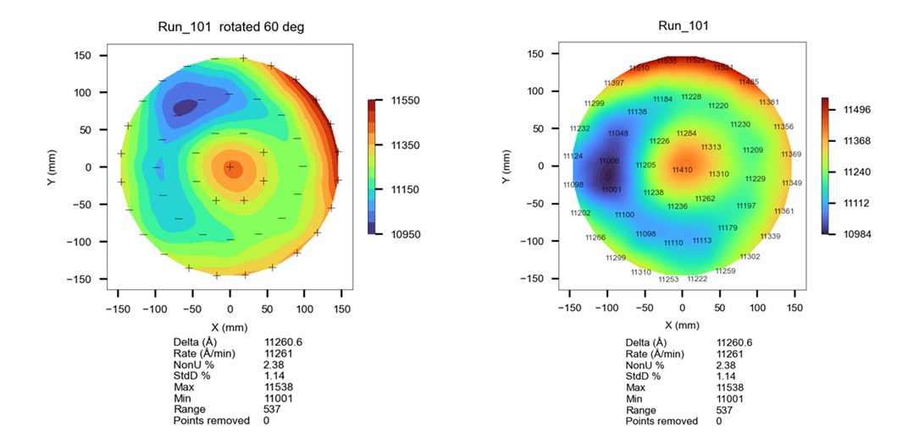
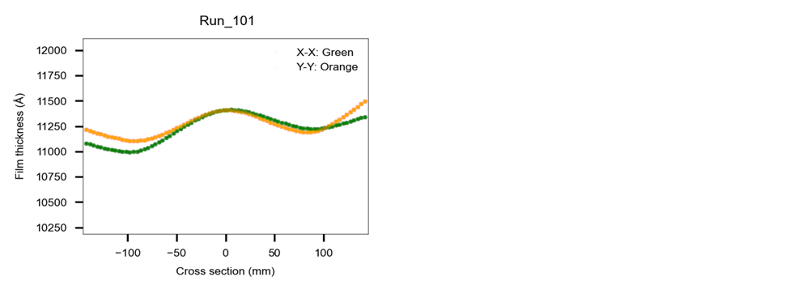
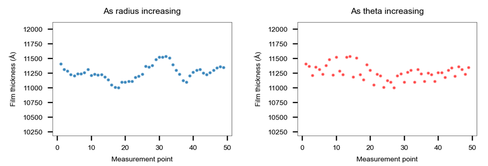
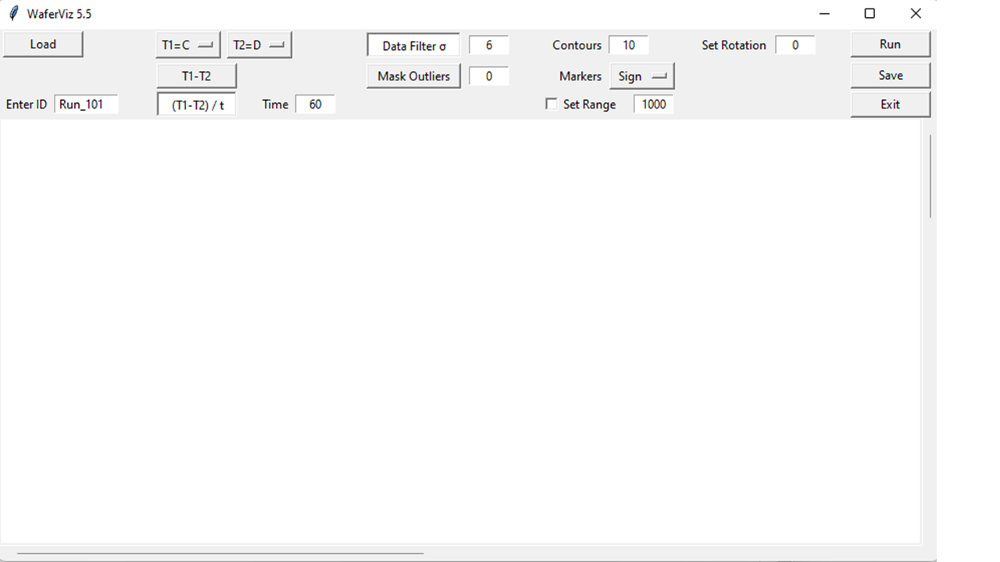
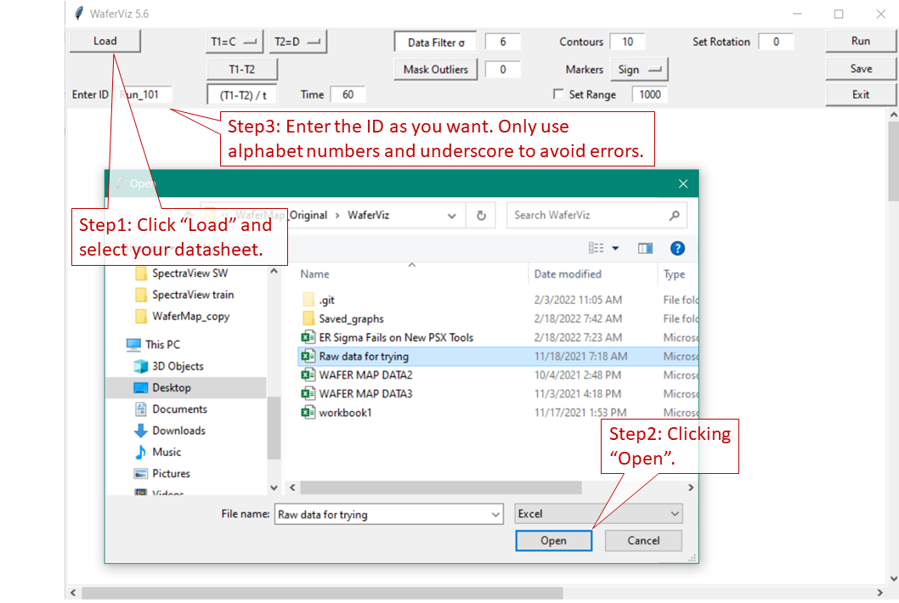
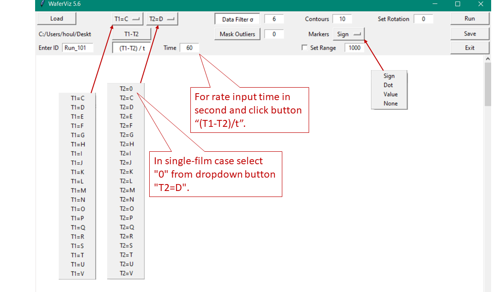
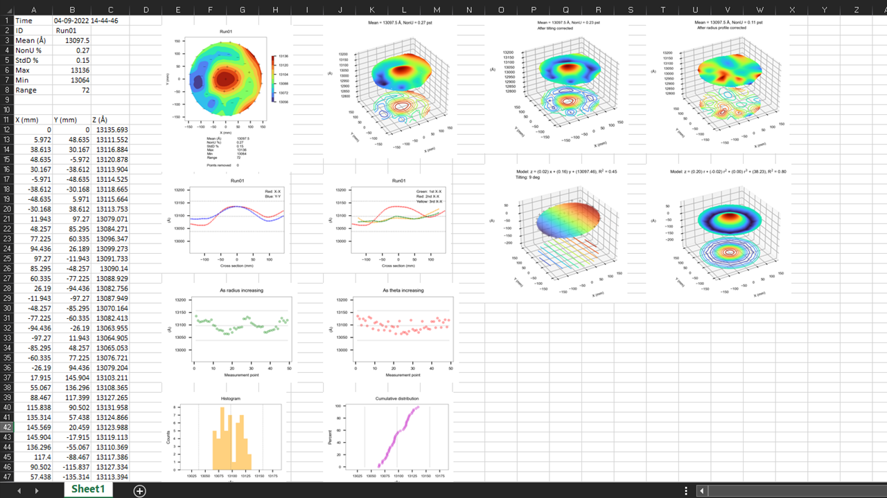

Wafer Visualization App - WaferViz
About
WaferViz is a free wafer plotting software intended for semiconductor engineers.
As a process engineer the author found it is helpful having plotting program handy for converting raw data to presentable graphs since in fabs where plotting programs are often embedded in metrology tools and not readily accessible.
Features
2d and 3d maps:

Set rotation, contour number and marker style:
Cross section:
Thickness as radius and theta increasing:
Thickness distribution:

User Guide
Download app:
Click "Download" in the left sidebar. Ignore some warnings from Windows and you should have user interface of the app as following image.
Prepare datasheet:
Make an excel workbook that contains raw data and associated coordination you want to plot. Paste coordination into columns "A" and "B". Paste film thickness into columns from "C" to "V" starting from row "2". Up to 20 films can be loaded. You may want to add notes to row "1" that wouldn't affect software plotting. The data are arranged as shown below.

Load datasheet:
Click "Load" button in UI and select the datasheet you have prepared. Click "Open" and enter ID for this wafer. Use alphabet numbers and underscores to avoid any errors.
Plot graphs:
Use two dropdown buttons "T1=C" and "T2=D" to select the two films of pre-process and post-process in datasheet you want to plot. "T1" and "T2" represent thickness of two films. In single-film case just select that film from dropdown button "T1=C" and select "0" from dropdown button "T2=D".
You may need to adjust configurations for plotting if different from that pre-set ones in the UI.
Save graphs:
Whenever the "Save" button in the UI is clicked all graphs displayed in UI are saved as an excel file stored in a self-generated folder named "Saved graphs". The folder is under the same directory as WaferViz located. The saved file has self-generated name with id and time stamp.
